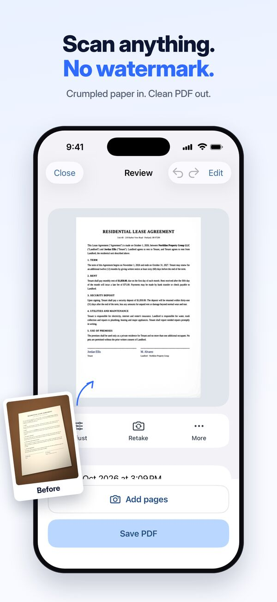
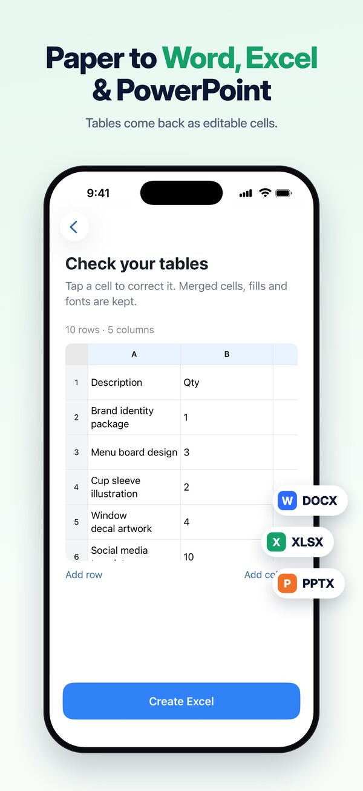
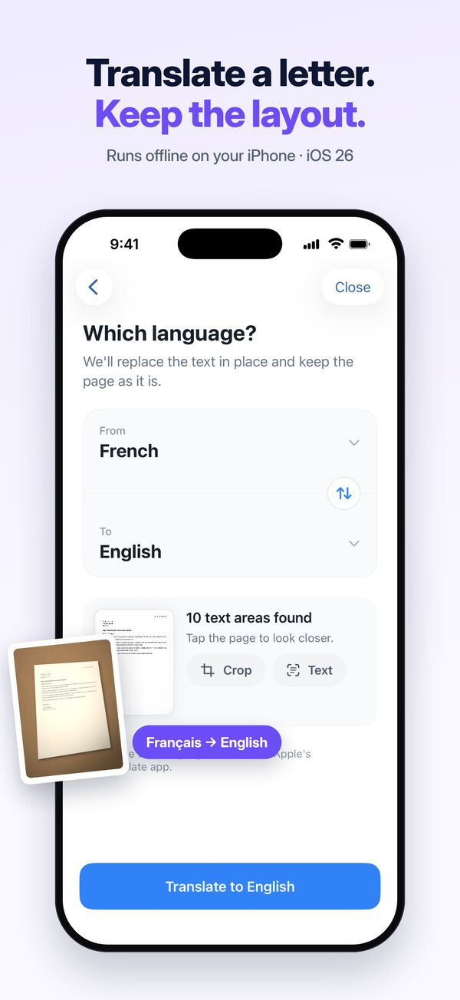
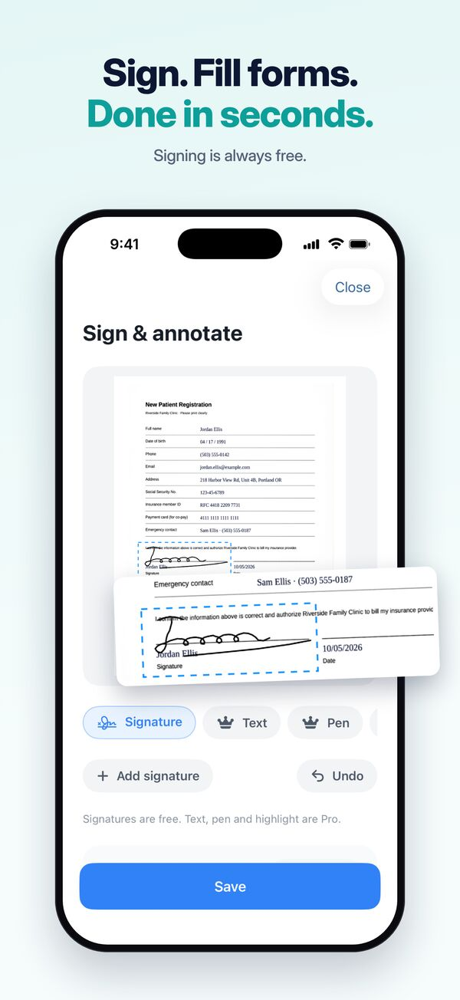
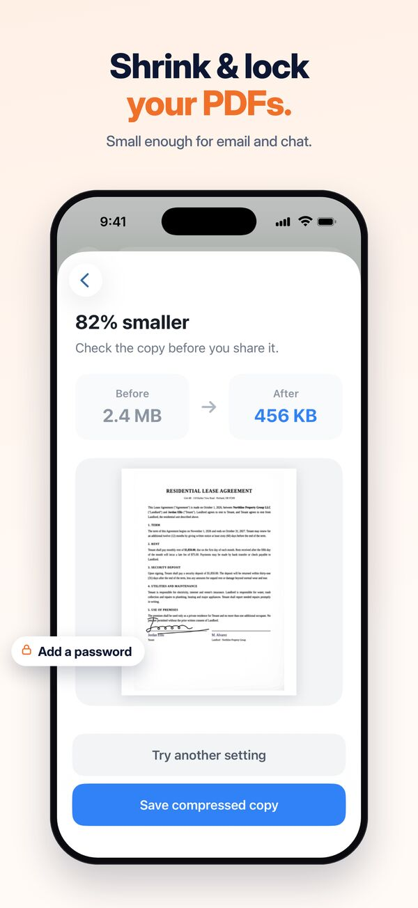
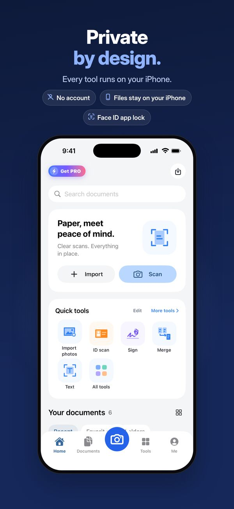

Glide Scan: PDF Scanner & OCR for iPhone
A document scanner app that works offline. Scan paper to clean PDFs, turn it into Word or Excel, and copy the text — with no account, no upload and no watermark.
Get Glide Scan on the App StoreFree to scan. iPhone, iOS 18 or later.






A scanner app that keeps your documents on your iPhone
Scan to PDF
Automatic edge detection, perspective correction and clean white pages. Multi-page PDFs, receipts, books, whiteboards and ID cards (both sides on one page).
OCR text recognition
Search and copy the text in every scan. Text recognition runs on your iPhone, without the internet.
Scan to Word, Excel & PowerPoint
Turn paper, tables and slides into files you can edit.
Translate photos
Translate a letter or a menu and keep the original layout (iOS 26 or later).
Sign, fill and redact
Sign documents, fill in forms and hide ID numbers and other personal information before you share.
PDF tools
Compress large PDFs, add a password, merge, split and reorder pages.
Private by design
Every tool runs on your iPhone. Glide Scan has no server that receives your documents, no sign-in and no tracking. Add a Face ID app lock to keep everything to yourself.
Free and Pro
Scanning, PDF export and text recognition are free, with no watermark. Try each Pro tool for free first. Glide Scan Pro unlocks every tool without limits and removes ads, as a monthly or yearly subscription or a one-time lifetime purchase.
Questions
Does Glide Scan work offline?
Yes. Scanning, text recognition (OCR), file conversion and every editing tool run on your iPhone. Your documents are never uploaded to a server.
Does Glide Scan add a watermark to scans?
No. Scans and exported PDFs have no watermark, on the free plan too. A watermark tool is there only if you want to add your own.
Do I need an account?
No. Glide Scan has no sign-in. Open the app and scan.
Is Glide Scan free?
Scanning, PDF export and text recognition are free. Glide Scan Pro unlocks every tool without limits and removes ads.
Can I convert a scan to Word or Excel?
Yes. Glide Scan turns scans into editable Word, Excel and PowerPoint files on your iPhone.
More answers on the support page.